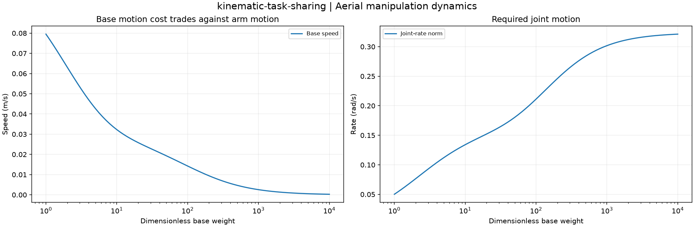

Reproducible Aerial manipulation dynamics. Units and field components are printed on the scientific axes. peak d-q quantities use exp(+i omega t); terminal currents point into the protected line.
Sealed numeric archive | Summary CSV | Physical parameters | Run request | Source and environment

| maximum_task_residual_m_s | 7.076311083754595e-17 |
|---|
These are simulations, not hardware measurements. Network-model, measurement, timing and statistical uncertainty require distinct convergence checks. Singular or unilluminated data use explicit masks.
Source revision: c7dc818cb7366218625417c06195e9af6e3b22d7.
Dirty checkout: False.
Configuration SHA-256: 7884090f04cc4958354bb0991c66c39131c785b840175db7b82a3ca1a027d826.
Replay preserves original source and parameter provenance. SHA-256 manifests detect changed bytes; they are unsigned integrity records, not certificates of physical validity.